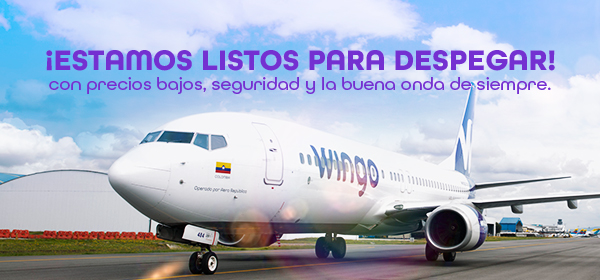
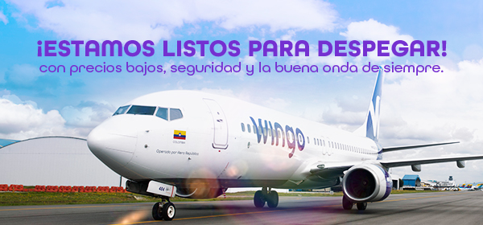
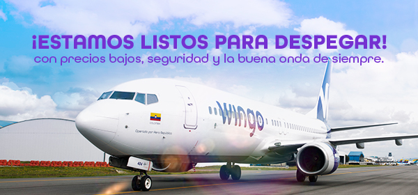
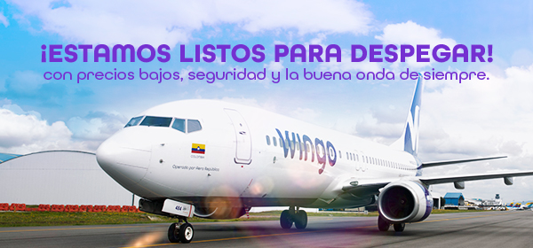

Hola,
Han sido cerca de 6 meses en los que todos hemos tenido que poner pausa a nuestra vida, tal y como la conocíamos, para adaptarnos a una nueva realidad que nos ha hecho más solidarios, empáticos y resilientes… ¡pero ya es hora de volver a volar alto y de retomar esos planes de explorar el mundo!
Por eso, hoy nos hace muy felices poder contarte que, a partir del próximo 3 de septiembre de 2020, Wingo vuelve a despegar para volar, inicialmente, por los cielos de Colombia y, esperamos que muy pronto, por los de toda la región con nuestra combinación única de vuelos siempre seguros, precios bajos, flexibilidad y buena onda. Así que empaca nuevamente tu maleta y prepárate para cuidarte, pero sin dejar de vivir.
Durante esos meses en tierra, no hemos descansado ni un solo momento y nos hemos preparado para este gran día que esperábamos con muchas ansias:
1. Diseñamos robustos protocolos de bioseguridad y limpieza para garantizar tu seguridad y la de tu familia.
2. Como garantía de nuestro compromiso contigo, ICONTEC nos otorgó su sello de calidad CheckIn Certificado y la Certificación en Operaciones Bioseguras, luego de una exhaustiva evaluación hecha a nuestros procesos.
3. Renovamos todos los sistemas de circulación y filtros de aire de alta eficiencia de nuestros aviones para que respires aire hasta 99,9% libre de virus y bacterias durante todos nuestros vuelos.
4. Diseñamos una línea de uniformes única para nuestras tripulaciones que incluye textiles con tecnología de repelencia que evita la transferencia de fluidos, elevando aún más el nivel de protección para todos en nuestros aviones.
5. Creamos un nuevo modelo de abordaje que nos permitirá evitar aglomeraciones cuando vuelas con nosotros.
6. Nos hicimos aún más flexibles y por eso decidimos incluir siempre un cambio de fecha gratis cuando compras un tiquete en Wingo.
7. Todos nos hemos capacitado para cuidarte y cuidarnos porque #SoloPensamosEnVolar
Y por eso, ahora contamos los días para volvernos a encontrar a partir del 3 de septiembre. Inicialmente operaremos vuelos entre Bogotá y Cartagena, pero confiamos en que entre todos vamos a continuar superando la pandemia para que así las autoridades de la región reabran sus fronteras y podamos volver a volar juntos a los mejores destinos de Latinoamérica y el Caribe.
Wingo seguirá estando ahí para ti porque el tono violeta que caracteriza nuestra buena onda vuelve a tomarse los cielos.
Nos vemos muy pronto a bordo,
Carolina E. Cortizo Colón
Directora General de Wingo
Conoce más sobre nuestros protocolos de bioseguridad aquí
Síguenos en: